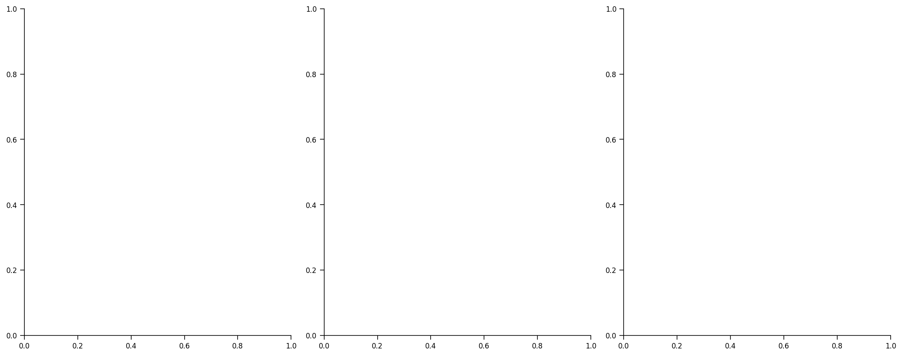
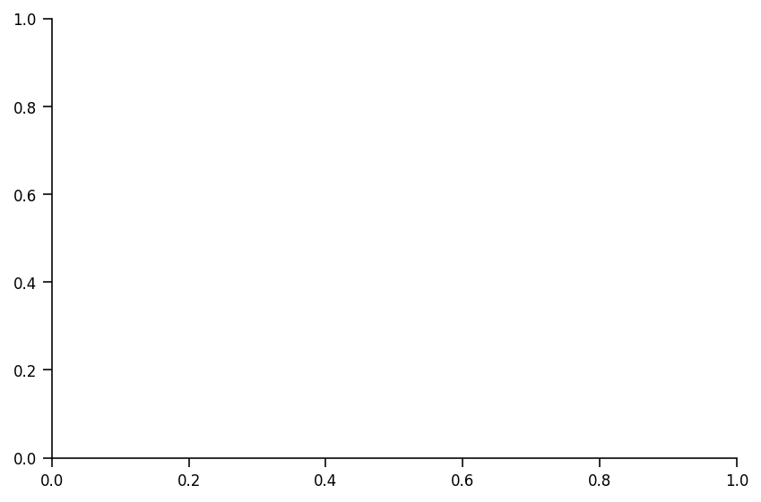

Tutorial 1: Introduction to Continual Learning
Contents


Tutorial 1: Introduction to Continual Learning¶
Week 3, Day 4: Continual Learning
By Neuromatch Academy
Content creators: Keiland Cooper, Diganta Misra, Gido van de Ven, Andrea Cossu, Vincenzo Lomonaco
Content reviewers: Arush Tagade, Jeremy Forest, Siwei Bai, Kelson Shilling-Scrivo
Content editors: Gagana B, Anoop Kulkarni, Spiros Chavlis
Production editors: Deepak Raya, Gagana B, Spiros Chavlis
Our 2021 Sponsors, including Presenting Sponsor Facebook Reality Labs

Tutorial Objectives¶
In this tutorial, we’ll dive head-first into the exciting field of continual learning (CL). CL has gained increasing attention in recent years, and for good reason. CL is positioned as a problem across sub-disciplines, from academia to industry, and may promise to be a major pathway towards strong artificial intelligence (AI). As datasets get bigger and AI gets smarter, we’re expecting more and more cognitive capabilities from our machines.
We have a few specific objectives for this tutorial:
Introduce major CL concepts
Introduce the most common strategies to aid CL
Utilize benchmarks and evaluation metrics
Explore present day applications of CL
Setup¶
First, let’s load in some useful packages and functions. We’ll primarily be using PyTorch as our neural network framework of choice. Be sure to run all the cells below so the code runs properly.
Install dependencies¶
# @title Install dependencies
!pip install seaborn --quiet
!pip install git+https://github.com/NeuromatchAcademy/evaltools --quiet
from evaltools.airtable import AirtableForm
# Generate airtable form
atform = AirtableForm('appn7VdPRseSoMXEG','W3D4_T1','https://portal.neuromatchacademy.org/api/redirect/to/9c55f6cb-cdf9-4429-ac1c-ec44fe64c303')
# Imports
import numpy as np
from scipy.stats import norm
import matplotlib.pyplot as plt
import math
import pandas as pd
import torch
import torch.nn as nn
import torch.optim as optim
import torch.nn.functional as F
import torchvision.datasets as datasets
import torchvision.transforms as transforms
---------------------------------------------------------------------------
ModuleNotFoundError Traceback (most recent call last)
/tmp/ipykernel_62541/2707462347.py in <module>
11 import torch.nn.functional as F
12
---> 13 import torchvision.datasets as datasets
14 import torchvision.transforms as transforms
/opt/hostedtoolcache/Python/3.7.13/x64/lib/python3.7/site-packages/torchvision/__init__.py in <module>
5 from torchvision import datasets
6 from torchvision import io
----> 7 from torchvision import models
8 from torchvision import ops
9 from torchvision import transforms
/opt/hostedtoolcache/Python/3.7.13/x64/lib/python3.7/site-packages/torchvision/models/__init__.py in <module>
16 from . import feature_extraction
17 from . import optical_flow
---> 18 from . import quantization
19 from . import segmentation
20 from . import video
/opt/hostedtoolcache/Python/3.7.13/x64/lib/python3.7/site-packages/torchvision/models/quantization/__init__.py in <module>
----> 1 from .mobilenet import *
2 from .resnet import *
3 from .googlenet import *
4 from .inception import *
5 from .shufflenetv2 import *
/opt/hostedtoolcache/Python/3.7.13/x64/lib/python3.7/site-packages/torchvision/models/quantization/mobilenet.py in <module>
----> 1 from .mobilenetv2 import QuantizableMobileNetV2, mobilenet_v2, __all__ as mv2_all
2 from .mobilenetv3 import QuantizableMobileNetV3, mobilenet_v3_large, __all__ as mv3_all
3
4 __all__ = mv2_all + mv3_all
/opt/hostedtoolcache/Python/3.7.13/x64/lib/python3.7/site-packages/torchvision/models/quantization/mobilenetv2.py in <module>
3 from torch import Tensor
4 from torch import nn
----> 5 from torch.ao.quantization import QuantStub, DeQuantStub
6 from torchvision.models.mobilenetv2 import InvertedResidual, MobileNetV2, model_urls
7
ModuleNotFoundError: No module named 'torch.ao.quantization'
Figure settings¶
# @title Figure settings
import ipywidgets as widgets # Interactive display
%config InlineBackend.figure_format = 'retina'
plt.style.use("https://raw.githubusercontent.com/NeuromatchAcademy/content-creation/main/nma.mplstyle")
Plotting functions¶
# @title Plotting functions
def plot_mnist(data, nPlots=10):
"""
Plot MNIST-like data
Args:
data: torch.tensor
MNIST like data to be plotted
nPlots: int
Number of samples to be plotted aka Number of plots
Returns:
Nothing
"""
plt.figure(figsize=(12, 8))
for ii in range(nPlots):
plt.subplot(1, nPlots, ii + 1)
plt.imshow(data[ii, 0], cmap="gray")
plt.axis('off')
plt.tight_layout
plt.show()
def multi_task_barplot(accs, tasks, t=None):
"""
Plot accuracy of multiple tasks
Args:
accs: list
List of accuracies per task
tasks: list
List of tasks
Returns:
Nothing
"""
nTasks = len(accs)
plt.bar(range(nTasks), accs, color='k')
plt.ylabel('Testing Accuracy (%)', size=18)
plt.xticks(range(nTasks),
[f"{TN}\nTask {ii + 1}" for ii, TN in enumerate(tasks.keys())],
size=18)
plt.title(t)
plt.show()
def plot_task(data, samples_num):
"""
Plots task accuracy
Args:
data: torch.tensor
Data of task to be plotted
samples_num: int
Number of samples corresponding to data for task
Returns:
Nothing
"""
plt.plot(figsize=(12, 6))
for ii in range(samples_num):
plt.subplot(1, samples_num, ii + 1)
plt.imshow(data[ii][0], cmap="gray")
plt.axis('off')
plt.show()
Helper functions¶
# @title Helper functions
def load_mnist(mnist_train, mnist_test, verbose=False, asnumpy=True):
"""
Helper function to load MNIST data
Note: You can try an alternate implementation with torchloaders
Args:
mnist_train: np.ndarray
MNIST training data
mnist_test: np.ndarray
MNIST test data
verbose: boolean
If True, print statistics
asnumpy: boolean
If true, MNIST data is passed as np.ndarray
Returns:
X_test: np.ndarray
Test data
y_test: np.ndarray
Labels corresponding to above mentioned test data
X_train: np.ndarray
Train data
y_train: np.ndarray
Labels corresponding to above mentioned train data
"""
x_traint, t_traint = mnist_train.data, mnist_train.targets
x_testt, t_testt = mnist_test.data, mnist_test.targets
if asnumpy:
# Fix dimensions and convert back to np array for code compatability
# We aren't using torch dataloaders for ease of use
x_traint = torch.unsqueeze(x_traint, 1)
x_testt = torch.unsqueeze(x_testt, 1)
x_train, x_test = x_traint.numpy().copy(), x_testt.numpy()
t_train, t_test = t_traint.numpy().copy(), t_testt.numpy()
else:
x_train, t_train = x_traint, t_traint
x_test, t_test = x_testt, t_testt
if verbose:
print(f"x_train dim: {x_train.shape} and type: {x_train.dtype}")
print(f"t_train dim: {t_train.shape} and type: {t_train.dtype}")
print(f"x_train dim: {x_test.shape} and type: {x_test.dtype}")
print(f"t_train dim: {t_test.shape} and type: {t_test.dtype}")
return x_train, t_train, x_test, t_test
def permute_mnist(mnist, seed, verbose=False):
"""
Given the training set, permute pixels of each
image.
Args:
mnist: np.ndarray
MNIST Data to be permuted
seed: int
Set seed for reproducibility
verbose: boolean
If True, print statistics
Returns:
perm_mnist: List
Permutated set of pixels for each incoming image
"""
np.random.seed(seed)
if verbose: print("Starting permutation...")
h = w = 28
perm_inds = list(range(h*w))
np.random.shuffle(perm_inds)
perm_mnist = []
for set in mnist:
num_img = set.shape[0]
flat_set = set.reshape(num_img, w * h)
perm_mnist.append(flat_set[:, perm_inds].reshape(num_img, 1, w, h))
if verbose: print("done.")
return perm_mnist
Set random seed¶
Executing set_seed(seed=seed) you are setting the seed
# @title Set random seed
# @markdown Executing `set_seed(seed=seed)` you are setting the seed
# for DL its critical to set the random seed so that students can have a
# baseline to compare their results to expected results.
# Read more here: https://pytorch.org/docs/stable/notes/randomness.html
# Call `set_seed` function in the exercises to ensure reproducibility.
import random
import torch
def set_seed(seed=None, seed_torch=True):
"""
Function that controls randomness. NumPy and random modules must be imported.
Args:
seed : Integer
A non-negative integer that defines the random state. Default is `None`.
seed_torch : Boolean
If `True` sets the random seed for pytorch tensors, so pytorch module
must be imported. Default is `True`.
Returns:
Nothing.
"""
if seed is None:
seed = np.random.choice(2 ** 32)
random.seed(seed)
np.random.seed(seed)
if seed_torch:
torch.manual_seed(seed)
torch.cuda.manual_seed_all(seed)
torch.cuda.manual_seed(seed)
torch.backends.cudnn.benchmark = False
torch.backends.cudnn.deterministic = True
print(f'Random seed {seed} has been set.')
# In case that `DataLoader` is used
def seed_worker(worker_id):
"""
DataLoader will reseed workers following randomness in
multi-process data loading algorithm.
Args:
worker_id: integer
ID of subprocess to seed. 0 means that
the data will be loaded in the main process
Refer: https://pytorch.org/docs/stable/data.html#data-loading-randomness for more details
Returns:
Nothing
"""
worker_seed = torch.initial_seed() % 2**32
np.random.seed(worker_seed)
random.seed(worker_seed)
Set device (GPU or CPU). Execute set_device()¶
# @title Set device (GPU or CPU). Execute `set_device()`
# especially if torch modules used.
# Inform the user if the notebook uses GPU or CPU.
def set_device():
"""
Set the device. CUDA if available, CPU otherwise
Args:
None
Returns:
Nothing
"""
device = "cuda" if torch.cuda.is_available() else "cpu"
if device != "cuda":
print("GPU is not enabled in this notebook. \n"
"If you want to enable it, in the menu under `Runtime` -> \n"
"`Hardware accelerator.` and select `GPU` from the dropdown menu")
else:
print("GPU is enabled in this notebook. \n"
"If you want to disable it, in the menu under `Runtime` -> \n"
"`Hardware accelerator.` and select `None` from the dropdown menu")
return device
SEED = 2021
set_seed(seed=SEED)
DEVICE = set_device()
Random seed 2021 has been set.
GPU is not enabled in this notebook.
If you want to enable it, in the menu under `Runtime` ->
`Hardware accelerator.` and select `GPU` from the dropdown menu
Data-loader MNIST dataset¶
# @title Data-loader MNIST dataset
import tarfile, requests, os
from torchvision import transforms
from torchvision.datasets import MNIST
name = 'MNIST'
fname = name + '.tar.gz'
url = 'https://www.di.ens.fr/~lelarge/MNIST.tar.gz'
if not os.path.exists(name):
print('\nDownloading and unpacking MNIST data. Please wait a moment...')
r = requests.get(url, allow_redirects=True)
with open(fname, 'wb') as fh:
fh.write(r.content)
with tarfile.open(fname) as tar:
tar.extractall('./') # Specify which folder to extract to
os.remove(fname)
print('\nDownloading MNIST completed.')
else:
print('MNIST has been already downloaded.')
# Load the Data
mnist_train = MNIST('./', download=False,
transform=transforms.Compose([transforms.ToTensor(), ]),
train=True)
mnist_test = MNIST('./', download=False,
transform=transforms.Compose([transforms.ToTensor(), ]),
train=False)
---------------------------------------------------------------------------
ModuleNotFoundError Traceback (most recent call last)
/tmp/ipykernel_62541/3532254415.py in <module>
1 # @title Data-loader MNIST dataset
2 import tarfile, requests, os
----> 3 from torchvision import transforms
4 from torchvision.datasets import MNIST
5
/opt/hostedtoolcache/Python/3.7.13/x64/lib/python3.7/site-packages/torchvision/__init__.py in <module>
5 from torchvision import datasets
6 from torchvision import io
----> 7 from torchvision import models
8 from torchvision import ops
9 from torchvision import transforms
/opt/hostedtoolcache/Python/3.7.13/x64/lib/python3.7/site-packages/torchvision/models/__init__.py in <module>
16 from . import feature_extraction
17 from . import optical_flow
---> 18 from . import quantization
19 from . import segmentation
20 from . import video
/opt/hostedtoolcache/Python/3.7.13/x64/lib/python3.7/site-packages/torchvision/models/quantization/__init__.py in <module>
----> 1 from .mobilenet import *
2 from .resnet import *
3 from .googlenet import *
4 from .inception import *
5 from .shufflenetv2 import *
/opt/hostedtoolcache/Python/3.7.13/x64/lib/python3.7/site-packages/torchvision/models/quantization/mobilenet.py in <module>
----> 1 from .mobilenetv2 import QuantizableMobileNetV2, mobilenet_v2, __all__ as mv2_all
2 from .mobilenetv3 import QuantizableMobileNetV3, mobilenet_v3_large, __all__ as mv3_all
3
4 __all__ = mv2_all + mv3_all
/opt/hostedtoolcache/Python/3.7.13/x64/lib/python3.7/site-packages/torchvision/models/quantization/mobilenetv2.py in <module>
3 from torch import Tensor
4 from torch import nn
----> 5 from torch.ao.quantization import QuantStub, DeQuantStub
6 from torchvision.models.mobilenetv2 import InvertedResidual, MobileNetV2, model_urls
7
ModuleNotFoundError: No module named 'torch.ao.quantization'
Section 1: The sequential learning problem: catastrophic forgetting¶
Time estimate: ~20mins
Video 1: Introduction to catastrophic forgetting¶
Here, we’ll explore catastrophic forgetting first hand - a key barrier preventing continual learning in neural networks. To do so, we’ll build a simple network model and try our best to teach it the trusty MNIST dataset
Section 1.1: A brief example of catastrophic forgetting¶
Let’s define a simple CNN that can perform fairly well on MNIST. We’ll also load in some training and testing functions we wrote to load the data into the model and train/test it. We don’t need to get into the details how they work for now (pretty standard) but feel free to double click the cell if you’re curious!
class Net(nn.Module):
"""
Simple MultiLayer CNN with following attributes and structure.
nn.Conv2d(1, 10, kernel_size=5) # First Convolutional Layer
nn.Conv2d(10, 20, kernel_size=5) # Second Convolutional Layer [add dropout]
nn.Linear(320, 50) # First Fully Connected Layer
nn.Linear(50, 10) # Second Fully Connected Layer
"""
def __init__(self):
"""
Initialize Multilayer CNN parameters
Args:
None
Returns:
Nothing
"""
super(Net, self).__init__()
self.conv1 = nn.Conv2d(1, 10, kernel_size=5)
self.conv2 = nn.Conv2d(10, 20, kernel_size=5)
self.conv2_drop = nn.Dropout2d()
self.fc1 = nn.Linear(320, 50)
self.fc2 = nn.Linear(50, 10)
def forward(self, x):
"""
Forward pass of network
Args:
x: np.ndarray
Input data
Returns:
x: np.ndarray
Output from final fully connected layer
"""
x = F.relu(F.max_pool2d(self.conv1(x), 2))
x = F.relu(F.max_pool2d(self.conv2_drop(self.conv2(x)), 2))
x = x.view(-1, 320)
x = F.relu(self.fc1(x))
x = F.dropout(x, training=self.training)
x = self.fc2(x)
return x
Model Training and Testing Functions [RUN ME!]¶
# @title Model Training and Testing Functions [RUN ME!]
# @markdown `train(model, x_train, t_train, optimizer, epoch, device)`
def train(model, x_train, t_train, optimizer, epoch, device):
"""
Train function
Args:
model: Net() type
Instance of the multilayer CNN
x_train: np.ndarray
Training data
t_train: np.ndarray
Labels corresponding to the training data
optimizer: torch.optim type
Implements Adam algorithm.
epoch: int
Number of epochs
device: string
CUDA/GPU if available, CPU otherwise
Returns:
Nothing
"""
model.train()
for start in range(0, len(t_train)-1, 256):
end = start + 256
x = torch.from_numpy(x_train[start:end])
if torch.cuda.is_available():
x = x.type(torch.cuda.FloatTensor)
else:
x = x.type(torch.FloatTensor)
y = torch.from_numpy(t_train[start:end]).long()
x, y = x.to(device), y.to(device)
optimizer.zero_grad()
output = model(x)
loss = F.cross_entropy(output, y)
loss.backward()
optimizer.step()
print('Train Epoch: {} \tLoss: {:.6f}'.format(epoch, loss.item()))
# @markdown `test(model, x_test, t_test, device)`
def test(model, x_test, t_test, device):
"""
Test function.
Args:
model: Net() type
Instance of the multilayer CNN
x_test: np.ndarray
Test data
t_test: np.ndarray
Labels corresponding to the test data
device: string
CUDA/GPU if available, CPU otherwise
Returns:
Nothing
"""
model.eval()
correct, test_loss = 0, 0
for start in range(0, len(t_test)-1, 256):
end = start + 256
with torch.no_grad():
x = torch.from_numpy(x_test[start:end])
if torch.cuda.is_available():
x = x.type(torch.cuda.FloatTensor)
else:
x = x.type(torch.FloatTensor)
y = torch.from_numpy(t_test[start:end]).long()
x, y = x.to(device), y.to(device)
output = model(x)
test_loss += F.cross_entropy(output, y).item() # Sum up batch loss
pred = output.max(1, keepdim=True)[1] # Get the index of the max logit
correct += pred.eq(y.view_as(pred)).sum().item()
test_loss /= len(t_train)
print('Test set: Average loss: {:.4f}, Accuracy: {}/{} ({:.0f}%)\n'.format(
test_loss, correct, len(t_test),
100. * correct / len(t_test)))
return 100. * correct / len(t_test)
class simpNet(nn.Module):
"""
Defines a simple neural network with following configuration:
nn.Linear(28*28, 320) # First Fully Connected Layer
nn.Linear(320, 10) + ReLU # Second Fully Connected Layer
"""
def __init__(self):
"""
Initialize SimpNet Parameters
Args:
None
Returns:
Nothing
"""
super(simpNet,self).__init__()
self.linear1 = nn.Linear(28*28, 320)
self.out = nn.Linear(320, 10)
self.relu = nn.ReLU()
def forward(self, img):
"""
Forward pass of SimpNet
Args:
img: np.ndarray
Input data
Returns:
x: np.ndarray
Output from final fully connected layer
"""
x = img.view(-1, 28*28)
x = self.relu(self.linear1(x))
x = self.out(x)
return x
Now let’s load our dataset: MNIST. We’ll also run a function we defined in the helper function cell above that permutes (scrambles) the images. This allows us to create additional datasets with similar statistics to MNIST on the fly. We’ll call the normal MNIST Task 1, and the permuted MNIST Task 2. We’ll see why in a second!
# Load in MNIST and create an additional permuted dataset
x_train, t_train, x_test, t_test = load_mnist(mnist_train, mnist_test,
verbose=True)
x_train2, x_test2 = permute_mnist([x_train, x_test], 0, verbose=False)
# Plot the data to see what we're working with
print('\nTask 1: MNIST Training data:')
plot_mnist(x_train, nPlots=10)
print('\nTask 2: Permuted MNIST data:')
plot_mnist(x_train2, nPlots=10)
Great! We have our data. This commonly used task is typically called the “permuted MNIST task”, given the shuffling of the data. The permutations are the same across all images in the same task (all the permuted image in that task follow are permuted in the same way). This is useful as it allows you to create almost as many tasks as you would like out of the same dataset. While it may not be the best benchmark for CL, it is commonly used, and will serve our purposes well enough for illustration.
Now, let’s initialize and train our model on the standard MNIST dataset (Task 1) and make sure everything is working properly.
# Define a new model and set params
model = Net().to(DEVICE)
optimizer = optim.SGD(model.parameters(), lr=0.01, momentum=0.9)
# Train the model on MNIST
nEpochs = 3
print(f"Training model on {nEpochs} epochs...")
for epoch in range(1, nEpochs+1):
train(model, x_train, t_train, optimizer, epoch, device=DEVICE)
test(model, x_test, t_test, device=DEVICE)
Okay great! It seems we get decent accuracy on standard MNIST which means the model is learning our dataset. Now, a reasonable assumption is that, like humans, once the network learns something, it can aggregate its knowledge and learn something else.
First, let’s get a baseline for how the model performs on the dataset it was just trained on (Task 1) as well as to see how well it performs on a new dataset (Task 2).
# Test the model's accuracy on both the regular and permuted dataset
# Let's define a dictionary that holds each of the task
# datasets and labels
tasks = {'MNIST':(x_test, t_test),
'Perm MNIST':(x_test2, t_test)}
t1_accs = []
for ti, task in enumerate(tasks.keys()):
print(f"Testing on task {ti + 1}")
t1_accs.append(test(model, tasks[task][0], tasks[task][1], device=DEVICE))
# And then let's plot the testing accuracy on both datasets
multi_task_barplot(t1_accs, tasks, t='Accuracy after training on Task 1 \nbut before Training on Task 2')
As we saw before, the model does great on the Task 1 dataset it was trained on, but not so well on the new one. No worries! We haven’t taught it the permuted MNIST dataset yet! So let’s train the same task 1-trained-model on the new data, and see if we can get comparable performance between the two types of MNIST
# Train the previously trained model on Task 2, the permuted MNIST dataset
for epoch in range(1, 3):
train(model, x_train2, t_train, optimizer, epoch, device=DEVICE)
test(model, x_test2, t_test, device=DEVICE)
# Same data as before, stored in a dict
tasks = {'MNIST':(x_test, t_test),
'Perm MNIST':(x_test2, t_test)}
# Test the model on both datasets, same as before
t12_accs = []
for ti, task in enumerate(tasks.keys()):
print(f"Testing on task {ti + 1}")
t12_accs.append(test(model, tasks[task][0], tasks[task][1], device=DEVICE))
# And then let's plot each of the testing accuracies after the new training
multi_task_barplot(t12_accs, tasks, t='Accuracy after training on Task 1 and then Training on Task 2')
Hey! Training did the trick, task 2 (permuted MNIST) has great accuracy now that we trained the model on it. But something is wrong. We just saw that Task 1 (standard MNIST) had high accuracy before we trained on the new task. Why? Try to incorporate what you learned in the lecture to help explain the problem we’re seeing. You might also take a few seconds and think of what possible soultions you might like to try. In the next section, we’ll look into exactly that!
Section 2: Continual Learning strategies¶
Time estimate: ~25mins
Video 2: CL strategies¶
Split MNIST¶
For this section, we will again use the MNIST dataset, but we will now create 5 tasks by splitting the dataset up in such a way that each task contains 2 classes i.e.,
Task_1: Classes (0, 1);
Task_2: Classes (2, 3);
Task_3: Classes (4, 5);
Task_4: Classes (6, 7);
Task_5: Classes (8, 9);
This problem is called Split MNIST, and it is popular toy problem in the continual learning literature.
set_seed(seed=SEED)
# Specify which classes should be part of which task
task_classes_arr = [(0, 1), (2, 3), (4, 5), (6, 7), (8, 9)]
tasks_num = len(task_classes_arr)
# Divide the data over the different tasks
task_data_with_overlap = []
for task_id, task_classes in enumerate(task_classes_arr):
train_mask = np.isin(t_train, task_classes)
test_mask = np.isin(t_test, task_classes)
x_train_task, t_train_task = x_train[train_mask], t_train[train_mask]
x_test_task, t_test_task = x_test[test_mask], t_test[test_mask]
# Convert the original class labels (i.e., the digits 0 to 9) to
# "within-task labels" so that within each task one of the digits is labeled
# as '0' and the other as '1'.
task_data_with_overlap.append((x_train_task, t_train_task - (task_id * 2),
x_test_task, t_test_task - (task_id * 2)))
# Display tasks
for sample in range(len(task_classes_arr)):
print(f"Task: {sample + 1}")
plot_task(task_data_with_overlap[sample][0], len(task_classes_arr))
Naive strategy (“fine-tuning”)¶
First, let’s see what happens if we simply sequentially train a deep neural network on these tasks in the standard way.
Let’s start by defining our network. As is common in the continual learning literature, we will use a “multi-headed layout”. This means that we have a separate output layer for each task to be learned, but the hidden layers of the network are shared between all tasks.
class FBaseNet(nn.Module):
"""
Base network that is shared between all tasks
"""
def __init__(self, hsize=512):
"""
Initialize parameters of base network
Args:
hsize: int
Size of head in the multi-headed layout
Returns:
Nothing
"""
super(FBaseNet, self).__init__()
self.l1 = nn.Linear(784, hsize)
def forward(self, x):
"""
Forward pass of FBaseNet
Args:
x: np.ndarray
Input data
Returns:
x: np.ndarray
Outputs after passing x through first fully connected layer
"""
x = x.view(x.size(0), -1)
x = F.relu(self.l1(x))
return x
class FHeadNet(nn.Module):
"""
Output layer of FBaseNet which will be separate for each task
"""
def __init__(self, base_net, input_size=512):
"""
Initialize parameters of base network
Args:
input_size: int
Size of input [default: 512]
Returns:
Nothing
"""
super(FHeadNet, self).__init__()
self.base_net = base_net
self.output_layer = nn.Linear(input_size, 2)
def forward(self, x):
"""
Forward pass of FHeadNet
Args:
x: np.ndarray
Input data
Returns:
x: np.ndarray
Outputs after passing x through output layer
"""
x = self.base_net.forward(x)
x = self.output_layer(x)
return x
# Define the base network (a new head is defined when we encounter a new task)
base = FBaseNet().to(DEVICE)
heads = []
# Define a list to store test accuracies for each task
accs_naive = []
# Set the number of epochs to train each task for
epochs = 3
# Loop through all tasks
for task_id in range(tasks_num):
# Collect the training data for the new task
x_train, t_train, _, _ = task_data_with_overlap[task_id]
# Define a new head for this task
model = FHeadNet(base).to(DEVICE)
heads.append(model)
# Set the optimizer
optimizer = optim.SGD(heads[task_id].parameters(), lr=0.01)
# Train the model (with the new head) on the current task
train(heads[task_id], x_train, t_train, optimizer, epochs, device=DEVICE)
# Test the model on all tasks seen so far
accs_subset = []
for i in range(0, task_id + 1):
_, _, x_test, t_test = task_data_with_overlap[i]
test_acc = test(heads[i], x_test, t_test, device=DEVICE)
accs_subset.append(test_acc)
# For unseen tasks, we don't test
if task_id < (tasks_num - 1):
accs_subset.extend([np.nan] * (4 - task_id))
# Collect all test accuracies
accs_naive.append(accs_subset)
---------------------------------------------------------------------------
IndexError Traceback (most recent call last)
/tmp/ipykernel_62541/1080421500.py in <module>
12 for task_id in range(tasks_num):
13 # Collect the training data for the new task
---> 14 x_train, t_train, _, _ = task_data_with_overlap[task_id]
15
16 # Define a new head for this task
IndexError: list index out of range
As you can see, whenever this network is trained on a new task, its performance on previously learned tasks drops substantially.
Now, let’s see whether we can use a continual learning strategy to prevent such forgetting.
Elastic Weight Consolidation (EWC)¶
EWC is a popular CL strategy which involves computing the importance of weights of the network relative to the task using the Fisher score and then penalizing the network for changes to the most important weights of the previous task.
It was introduced in the paper “Overcoming catastrophic forgetting in neural networks “.
For EWC, we need to define a new function to compute the fisher information matrix for each weight at the end of every task:
def on_task_update(task_id, x_train, t_train, model, shared_model, fisher_dict,
optpar_dict, device):
"""
Helper function to accumulate gradients to further calculate fisher scores
Args:
task_id: int
ID of the task to be updated
x_train: np.ndarray
Training data
t_train: np.ndarray
Corresponding ground truth of training data
shared_model: FBaseNet instance
Instance of the part of the model that is shared amongst all tasks
fisher_dict: dict
Dictionary with fisher values
optpar_dict: dict
Dictionary with optimal parameter values
device: string
CUDA/GPU if available, CPU otherwise
Returns:
Nothing
"""
model.train()
optimizer.zero_grad()
# Accumulating gradients
for start in range(0, len(t_train) - 1, 256):
end = start + 256
x = torch.from_numpy(x_train[start:end])
if torch.cuda.is_available():
x = x.type(torch.cuda.FloatTensor)
else:
x = x.type(torch.FloatTensor)
y = torch.from_numpy(t_train[start:end]).long()
x, y = x.to(device), y.to(device)
output = model(x)
loss = F.cross_entropy(output, y)
loss.backward()
fisher_dict[task_id] = {}
optpar_dict[task_id] = {}
# Gradients accumulated can be used to calculate fisher
for name, param in shared_model.named_parameters():
optpar_dict[task_id][name] = param.data.clone()
fisher_dict[task_id][name] = param.grad.data.clone().pow(2)
We also need to modify our train function to add the new regularization loss:
def train_ewc(model, shared_model, task_id, x_train, t_train, optimizer,
epoch, ewc_lambda, fisher_dict, optpar_dict, device):
"""
Adding Regularisation loss to training function
Args:
model: FHeadNet instance
Initates a new head network for task
task_id: int
ID of the task to be updated
x_train: np.ndarray
Training data
t_train: np.ndarray
Corresponding ground truth of training data
shared_model: FBaseNet instance
Instance of the part of the model that is shared amongst all tasks
fisher_dict: dict
Dictionary to store fisher values
optpar_dict: dict
Dictionary to store optimal parameter values
device: string
CUDA/GPU if available, CPU otherwise
optimizer: torch.optim type
Implements Adam algorithm.
num_epochs: int
Number of epochs
ewc_lambda: float
EWC hyperparameter
Returns:
Nothing
"""
model.train()
for start in range(0, len(t_train) - 1, 256):
end = start + 256
x = torch.from_numpy(x_train[start:end])
if torch.cuda.is_available():
x = x.type(torch.cuda.FloatTensor)
else:
x = x.type(torch.FloatTensor)
y = torch.from_numpy(t_train[start:end]).long()
x, y = x.to(device), y.to(device)
optimizer.zero_grad()
output = model(x)
loss = F.cross_entropy(output, y)
for task in range(task_id):
for name, param in shared_model.named_parameters():
fisher = fisher_dict[task][name]
optpar = optpar_dict[task][name]
loss += (fisher * (optpar - param).pow(2)).sum() * ewc_lambda
loss.backward()
optimizer.step()
print(f"Train Epoch: {epoch} \tLoss: {loss.item():.6f}")
Now let’s train with EWC:
# Define the base network (a new head is defined when we encounter a new task)
base = FBaseNet().to(DEVICE)
heads = []
# Define a list to store test accuracies for each task
accs_ewc = []
# Set number of epochs
epochs = 2
# Set EWC hyperparameter
ewc_lambda = 0.2
# Define dictionaries to store values needed by EWC
fisher_dict = {}
optpar_dict = {}
# Loop through all tasks
for task_id in range(tasks_num):
# Collect the training data for the new task
x_train, t_train, _, _ = task_data_with_overlap[task_id]
# Define a new head for this task
model = FHeadNet(base).to(DEVICE)
heads.append(model)
# Set the optimizer
optimizer = optim.SGD(heads[task_id].parameters(), lr=0.01)
# Train the model (with the new head) on the current task
for epoch in range(1, epochs+1):
train_ewc(heads[task_id], heads[task_id].base_net, task_id, x_train,
t_train, optimizer, epoch, ewc_lambda, fisher_dict,
optpar_dict, device=DEVICE)
on_task_update(task_id, x_train, t_train, heads[task_id],
heads[task_id].base_net, fisher_dict, optpar_dict,
device=DEVICE)
# Test the model on all tasks seen so far
accs_subset = []
for i in range(0, task_id + 1):
_, _, x_test, t_test = task_data_with_overlap[i]
test_acc = test(heads[i], x_test, t_test, device=DEVICE)
accs_subset.append(test_acc)
# For unseen tasks, we don't test
if task_id < (tasks_num - 1):
accs_subset.extend([np.nan] * (4 - task_id))
# Collect all test accuracies
accs_ewc.append(accs_subset)
---------------------------------------------------------------------------
IndexError Traceback (most recent call last)
/tmp/ipykernel_62541/851281632.py in <module>
19 for task_id in range(tasks_num):
20 # Collect the training data for the new task
---> 21 x_train, t_train, _, _ = task_data_with_overlap[task_id]
22
23 # Define a new head for this task
IndexError: list index out of range
Plot Naive vs EWC results¶
seaborn library should be installed
# @title Plot Naive vs EWC results
# @markdown `seaborn` library should be installed
import seaborn as sns
fig, axes = plt.subplots(1, 3, figsize=(15, 6))
accs_fine_grid = np.array(accs_naive)
nan_mask = np.isnan(accs_naive)
sns.heatmap(accs_naive, vmin=0, vmax=100, mask=nan_mask, annot=True,fmt='.0f',
yticklabels=range(1, 6), xticklabels=range(1, 6), ax=axes[0],
cbar=False)
sns.heatmap(accs_ewc, vmin=0, vmax=100, mask=nan_mask, annot=True,fmt='.0f',
yticklabels=range(1, 6), xticklabels=range(1, 6), ax=axes[1],
cbar=False)
axes[0].set_ylabel('Tested on Task')
axes[0].set_xlabel('Naive')
axes[1].set_xlabel('EWC')
axes[2].plot(range(1, 6), np.nanmean(accs_naive, axis=1), linewidth=2.0)
axes[2].plot(range(1, 6), np.nanmean(accs_ewc, axis=1), linewidth=2.0)
axes[2].legend(['Naive', 'EWC'])
axes[2].set_ylabel('Accumulated Accuracy for Seen Tasks')
axes[2].set_xlabel('Task Number')
plt.show()
---------------------------------------------------------------------------
ValueError Traceback (most recent call last)
/tmp/ipykernel_62541/3127452169.py in <module>
10 sns.heatmap(accs_naive, vmin=0, vmax=100, mask=nan_mask, annot=True,fmt='.0f',
11 yticklabels=range(1, 6), xticklabels=range(1, 6), ax=axes[0],
---> 12 cbar=False)
13 sns.heatmap(accs_ewc, vmin=0, vmax=100, mask=nan_mask, annot=True,fmt='.0f',
14 yticklabels=range(1, 6), xticklabels=range(1, 6), ax=axes[1],
/opt/hostedtoolcache/Python/3.7.13/x64/lib/python3.7/site-packages/seaborn/_decorators.py in inner_f(*args, **kwargs)
44 )
45 kwargs.update({k: arg for k, arg in zip(sig.parameters, args)})
---> 46 return f(**kwargs)
47 return inner_f
48
/opt/hostedtoolcache/Python/3.7.13/x64/lib/python3.7/site-packages/seaborn/matrix.py in heatmap(data, vmin, vmax, cmap, center, robust, annot, fmt, annot_kws, linewidths, linecolor, cbar, cbar_kws, cbar_ax, square, xticklabels, yticklabels, mask, ax, **kwargs)
540 plotter = _HeatMapper(data, vmin, vmax, cmap, center, robust, annot, fmt,
541 annot_kws, cbar, cbar_kws, xticklabels,
--> 542 yticklabels, mask)
543
544 # Add the pcolormesh kwargs here
/opt/hostedtoolcache/Python/3.7.13/x64/lib/python3.7/site-packages/seaborn/matrix.py in __init__(self, data, vmin, vmax, cmap, center, robust, annot, fmt, annot_kws, cbar, cbar_kws, xticklabels, yticklabels, mask)
107
108 # Validate the mask and convet to DataFrame
--> 109 mask = _matrix_mask(data, mask)
110
111 plot_data = np.ma.masked_where(np.asarray(mask), plot_data)
/opt/hostedtoolcache/Python/3.7.13/x64/lib/python3.7/site-packages/seaborn/matrix.py in _matrix_mask(data, mask)
69 # For array masks, ensure that shape matches data then convert
70 if mask.shape != data.shape:
---> 71 raise ValueError("Mask must have the same shape as data.")
72
73 mask = pd.DataFrame(mask,
ValueError: Mask must have the same shape as data.

Section 3: Continual learning benchmarks¶
Time estimate: ~30mins
In this section, we will introduce different ways in which a continual learning problem could be set up.
Video 3: Benchmarks and different types of continual learning¶
As introduced in the above video, continual learning research certainly does not only use the MNIST dataset. But not to make things more complicated than necessary (and to make sure the examples run in an acceptable amount of time), we continue with the Split MNIST example for now. At the end of this notebook we will take a sneak peak at the CORe50 dataset.
Another point made in the video is that continual learning is not a unitary problem, but that there are different types (or ‘scenarios’) of continual learning:
Task-incremental learning: an algorithm must incrementally learn a set of clearly distinct tasks (the tasks are clearly distinct because the algorithm is always told which task it must perform)
Domain-incremental learning: an algorithm must learn the same kind of task but in different contexts or domains
Class-incremental learning: an algorithm must incrementally learn to distinguish between an increasing number of classes.
![table.png]()
These continual learning scenarios can be distinguished from each other based on whether task identity information (or the task label) is provided to the algorithm, and – if it is not – whether task identity must be inferred (see schematic in the lecture slides).
In this paper you can find more details about these different types of continual learning.
Task-incremental Split MNIST versus class-incremental Split MNIST¶
Now, let’s get back to our Split MNIST example. To start with, let’s identify according to which scenario Split MNIST was performed in the previous section.
Recall that the Split MNIST problem consists of five tasks, whereby each task contains two digits. In the previous section, the model was set-up in such a way that it had a separate output layer for each of these tasks (this is typically called a ‘multi-headed output layer’). At test time, the model then used the output layer of the task to which the example to be classified belonged. This means that it was assumed that the model always knows which task it must perform, so this was an example of task-incremental learning.
In the continual learning literature. this variant of Split MNIST is also referred to as multi-headed Split MNIST. However, although a multi-headed output layer is probably the most common way to use task identity information, it is not the only way (for example, see this paper).
Now, let’s reorganize the Split MNIST problem to set it up as a class-incremental learning problem. That is, task information is no longer provided to the model; and the model must be able to decide itself to which task a test sample belongs. This means that, after all tasks have been learned, the model must now choose between all ten digits. This variant of Split MNIST is also referred to as single-headed Split MNIST.
# Load the MNIST dataset
x_train, t_train, x_test, t_test = load_mnist(mnist_train, mnist_test,
verbose=True)
# Define which classes are part of each task
classes_per_task = [(0, 1), (2, 3), (4, 5), (6, 7), (8, 9)]
# Divide the MNIST dataset in tasks
task_data = []
for _, classes_in_this_task in enumerate(classes_per_task):
# Which data-points belong to the classes in the current task?
train_mask = np.isin(t_train, classes_in_this_task)
test_mask = np.isin(t_test, classes_in_this_task)
x_train_task, t_train_task = x_train[train_mask], t_train[train_mask]
x_test_task, t_test_task = x_test[test_mask], t_test[test_mask]
# Add the data for the current task
task_data.append((x_train_task, t_train_task, x_test_task, t_test_task))
# In contrast to the task-incremental version of Split MNIST explored in the
# last section, now task identity information will not be provided to the model
Example: EWC on the class-incremental version of Split MNIST¶
Let’s now try the EWC method on this class-incremental version of Split MNIST.
# Define the model and the optimzer
model = Net().to(DEVICE)
optimizer = optim.SGD(model.parameters(), lr=0.001)
# Set 'lambda', the hyperparameter of EWC
ewc_lambda = 0.2
# Define dictionaries to store values needed by EWC
fisher_dict = {}
optpar_dict = {}
# Prepare list to store average accuracies after each task
ewc_accs = []
# Loop through all tasks
for id, task in enumerate(task_data):
# Collect training data
x_train, t_train, _, _ = task
# Training with EWC
print("Training on task: ", id)
for epoch in range(1, 2):
train_ewc(model, model, id, x_train, t_train, optimizer, epoch,
ewc_lambda, fisher_dict, optpar_dict, device=DEVICE)
on_task_update(id, x_train, t_train, model, model, fisher_dict,
optpar_dict, device=DEVICE)
# Evaluate performance after training on this task
avg_acc = 0
for id_test, task in enumerate(task_data):
print(f"Testing on task: {id_test}")
_, _, x_test, t_test = task
acc = test(model, x_test, t_test, device=DEVICE)
avg_acc = avg_acc + acc
print(f"Avg acc: {avg_acc / len(task_data)}")
ewc_accs.append(avg_acc / len(task_data))
That didn’t work well…
The model only correctly predicts the classes from the last task it has seen, all earlier seen classes seem to be forgotten.
You might wonder whether the reason that EWC performed so badly in the above example is because we chose an unsuitable value for the hyperparameter lambda. Although we don’t have time to demonstrate this, there are no values of lambda that would lead to good performance.
In general, parameter regularization based methods, such as EWC, have been found not to work well on class-incremental learning problems.
Replay¶
As discussed in the lecture of the previous section, another popular continual learning strategy is replay. Let’s see whether replay works better on the class-incremental learning version of Split MNIST than EWC did.
One implementation of replay is to simply store all data from previously seen tasks, and to then, whenever a new task must be learned, mix in that stored data with the training data of the new task.
To achieve this form of replay, let’s define the following function for shuffling multiple datasets (e.g., the data from previous tasks with the data from the current task) together:
def shuffle_datasets(dataset, seed, in_place=False):
"""
Shuffle a list of two (or more) datasets.
Args:
dataset: np.ndarray
Dataset
seed: Integer
A non-negative integer that defines the random state.
in_place: boolean
If True, shuffle datasets in place
Returns:
Nothing
"""
np.random.seed(seed)
rng_state = np.random.get_state()
new_dataset = []
for x in dataset:
if in_place:
np.random.shuffle(x)
else:
new_dataset.append(np.random.permutation(x))
np.random.set_state(rng_state)
if not in_place:
return new_dataset
Note that this form of replay is somewhat extreme, as it stores all the training data from previous tasks. In practice, replay is often implemented in ways that store less data, for example either by using relatively small memory buffers (see this paper) or by learning a generative model to then generate the data to be replayed (see this paper or this paper).
Example: Test replay on the class-incremental version of Split MNIST¶
Let’s try whether this replay strategy works better than EWC.
# Define the model and the optimizer
model = Net().to(DEVICE)
optimizer = optim.SGD(model.parameters(), lr=0.01)
# Prepare list to store average accuracies after each task
rehe_accs = []
# Loop through all tasks
for id, task in enumerate(task_data):
# Collect training data
x_train, t_train, _, _ = task
# Add replay
for i in range(id):
past_x_train, past_t_train, _, _ = task_data[i]
x_train = np.concatenate((x_train, past_x_train))
t_train = np.concatenate((t_train, past_t_train))
x_train, t_train = shuffle_datasets([x_train, t_train], seed=SEED)
# Training
print(f"Training on task: {id}")
for epoch in range(1, 3):
train(model, x_train, t_train, optimizer, epoch, device=DEVICE)
# Evaluate performance after training on this task
avg_acc = 0
for id_test, task in enumerate(task_data):
print(f"Testing on task: {id_test}")
_, _, x_test, t_test = task
acc = test(model, x_test, t_test, device=DEVICE)
avg_acc = avg_acc + acc
print(f"Avg acc: {avg_acc / len(task_data)}")
rehe_accs.append(avg_acc/len(task_data))
And finally, let’s compare the performance of EWC and Replay on the class-incremental version of Split MNIST in a plot:
Plot EWC vs. Replay¶
# @title Plot EWC vs. Replay
plt.plot([1, 2, 3, 4, 5], rehe_accs, '-o', label="Replay")
plt.plot([1, 2, 3, 4, 5], ewc_accs, '-o', label="EWC")
plt.xlabel('Tasks Encountered', fontsize=14)
plt.ylabel('Average Accuracy', fontsize=14)
plt.title('CL Strategies on Class-incremental version of Split MNIST',
fontsize=14);
plt.xticks([1, 2, 3, 4, 5])
plt.legend(prop={'size': 16})
plt.show()
---------------------------------------------------------------------------
ValueError Traceback (most recent call last)
/tmp/ipykernel_62541/129925185.py in <module>
1 # @title Plot EWC vs. Replay
----> 2 plt.plot([1, 2, 3, 4, 5], rehe_accs, '-o', label="Replay")
3 plt.plot([1, 2, 3, 4, 5], ewc_accs, '-o', label="EWC")
4 plt.xlabel('Tasks Encountered', fontsize=14)
5 plt.ylabel('Average Accuracy', fontsize=14)
/opt/hostedtoolcache/Python/3.7.13/x64/lib/python3.7/site-packages/matplotlib/pyplot.py in plot(scalex, scaley, data, *args, **kwargs)
2769 return gca().plot(
2770 *args, scalex=scalex, scaley=scaley,
-> 2771 **({"data": data} if data is not None else {}), **kwargs)
2772
2773
/opt/hostedtoolcache/Python/3.7.13/x64/lib/python3.7/site-packages/matplotlib/axes/_axes.py in plot(self, scalex, scaley, data, *args, **kwargs)
1630 """
1631 kwargs = cbook.normalize_kwargs(kwargs, mlines.Line2D)
-> 1632 lines = [*self._get_lines(*args, data=data, **kwargs)]
1633 for line in lines:
1634 self.add_line(line)
/opt/hostedtoolcache/Python/3.7.13/x64/lib/python3.7/site-packages/matplotlib/axes/_base.py in __call__(self, data, *args, **kwargs)
310 this += args[0],
311 args = args[1:]
--> 312 yield from self._plot_args(this, kwargs)
313
314 def get_next_color(self):
/opt/hostedtoolcache/Python/3.7.13/x64/lib/python3.7/site-packages/matplotlib/axes/_base.py in _plot_args(self, tup, kwargs, return_kwargs)
496
497 if x.shape[0] != y.shape[0]:
--> 498 raise ValueError(f"x and y must have same first dimension, but "
499 f"have shapes {x.shape} and {y.shape}")
500 if x.ndim > 2 or y.ndim > 2:
ValueError: x and y must have same first dimension, but have shapes (5,) and (0,)

Exercise 3: Identify the continual learning scenario of the permuted MNIST example from Section 1¶
What type of ‘scenario’ was the permuted MNIST problem that was introduced in Section 1? Was it task-incremental, domain-incremental or class-incremental? Try to motivate your answer.
# to_remove explanation
'''
The Permuted MNIST problem in Section 1 is an example of domain-incremental
learning.
Recall that this problem consisted of two tasks: normal MNIST (task 1) and MNIST
with permuted input images (task 2).
When the model is evaluated after learning both tasks, the model is not told to
which task an image belongs (i.e., the model is not told whether the image be
classified is permuted or not), but the model also does not need to identify to
which task an image belongs (i.e., the model does not need to predict whether
the image to be classified has permuted pixels or not; it only needs to predict
the original digit displayed in the image).
Another way to motivate that this problem is an example of domain-incremental
learning, is to say that in both task 1 (normal MNIST) and task 2 (MNIST with
permuted input images), the 'type of problem' is the same (i.e., to identify the
digit displayed in the original image), but the 'context' is changing (i.e.,
the order in which the image pixels are presented).
''';
Section 4: Evaluation of continual learning algorithms¶
Time estimate: ~20mins
Understanding how your CL algorithm is performing is key to gain insights on its behavior and to decide how to improve it.
Here, we will focus on how to build some of the most important CL metrics!
Video 4: Continual Learning Evaluation¶
We will now simulate the data for T tasks and record all the accuracy values in a single TxT matrix.
Section 4.1: Average Accuracy¶
The Average Accuracy (ACC) metric computes the average accuracy over all tasks.
def ACC(result_matrix):
"""
Average Accuracy metric
Args:
result_matrix: np.ndarray
TxT matrix containing accuracy values in each (i, j) entry.
(i, j) -> test accuracy on task j after training on task i
Returns:
acc: float
Average accuracy over all tasks
final_accs: np.ndarray
Accuracies after training extracted from result matrix
"""
final_accs = abs(result_matrix[-1, :]) # Take accuracies after final training
acc = np.mean(final_accs) # Compute average
return acc, final_accs
Section 4.2: Backward Transfer¶
The Backward Transfer (BWT) metric of task i computes the accuracy on task i after training on last task minus the accuracy on task i after training on task i.
To get the average BWT you have to average across all tasks.
Negative BWT expresses the amount of forgetting suffered by the algorithm.
def BWT(result_matrix):
"""
Backward Transfer metric
Args:
result_matrix: np.ndarray
TxT matrix containing accuracy values in each (i, j) entry.
(i, j) -> test accuracy on task j after training on task i
Returns:
task_bwt: np.ndarray
BWT for each task
average_bwt: float
Average BWT across all tasks
"""
final_accs = result_matrix[-1, :] # Take accuracies after final training
# Accuracies on task i right after training on task i, for all i
training_accs = np.diag(result_matrix)
task_bwt = final_accs - training_accs # BWT for each task
average_bwt = np.mean(task_bwt) # Compute average
return average_bwt, task_bwt
Coding Exercise 4.2: Evaluate your CL algorithm¶
You should replace the ellipses, i.e., ..., with your code. You should train 5 tasks and your result_matrix is [0,1] values from a randomly sampled distribution.
This is the only cell you have to modify :)
Hint: Use np.random.choice with weight values p = [0.1, 0.9].
def make_result_matrix(T):
"""
Create a TxT matrix with values between 0 and 1 to
be used to compute the metrics.
Args:
T : int
The number of tasks
Returns:
result_matrix : numpy.array
A TxT matrix
"""
#################################################
## TODO for students: update the value of the parameter ##
raise NotImplementedError("Student exercise: implement the mask")
#################################################
distribution = np.random.rand(T**2)
# Create a random mask
mask = ...
distribution[mask] = np.nan
result_matrix = []
count = 0
for j in range(T):
temp = []
for i in range(T):
temp.append(distribution[count])
count += 1
result_matrix.append(temp)
result_matrix = np.array(result_matrix)
return result_matrix
# Add event to airtable
atform.add_event('Coding Exercise 4.2: Evaluate your CL algorithm')
set_seed(seed=SEED)
T = len(rehe_accs) # Number of tasks
## Uncomment below to test you function
# result_matrix = make_result_matrix(T)
# print(result_matrix)
# to_remove solution
def make_result_matrix(T):
"""
Create a TxT matrix with values between 0 and 1 to
be used to compute the metrics.
Args:
T : int
The number of tasks
Returns:
result_matrix : numpy.array
A TxT matrix
"""
distribution = np.random.rand(T**2)
# Create a random mask
mask = np.random.choice([1, 0], distribution.shape, p=[.1, .9]).astype(bool)
distribution[mask] = np.nan
result_matrix = []
count = 0
for j in range(T):
temp = []
for i in range(T):
temp.append(distribution[count])
count += 1
result_matrix.append(temp)
result_matrix = np.array(result_matrix)
return result_matrix
# Add event to airtable
atform.add_event('Coding Exercise 4.2: Evaluate your CL algorithm')
set_seed(seed=SEED)
T = len(rehe_accs) # Number of tasks
## Uncomment below to test you function
result_matrix = make_result_matrix(T)
print(result_matrix)
Random seed 2021 has been set.
[]
[[0.60597828 0.73336936 0.13894716 0.31267308 nan]
[0.12816238 0.17899311 0.75292543 0.66216051 0.78431013]
[0.0968944 0.05857129 0.96239599 0.61655744 0.08662996]
[0.56127236 0.61652471 0.96384302 0.57430429 0.37116085]
[0.45214524 0.20185025 0.56930512 0.19509597 0.58370402]]
Think! 4.2: Performance metrics¶
Why we choose a specific number of performance metrics even if we have access to numerous metrics?
Why does the result matrix have
nanvalues?
Student Response¶
# @title Student Response
from ipywidgets import widgets
text=widgets.Textarea(
value='Type your answer here and click on `Submit!`',
placeholder='Type something',
description='',
disabled=False
)
button = widgets.Button(description="Submit!")
display(text,button)
def on_button_clicked(b):
atform.add_answer('q1' , text.value)
print("Submission successful!")
button.on_click(on_button_clicked)
# to_remove explanation
"""
1. As we discussed, the number of metrics you can evaluate is very large. To keep things compact,
we only focus on 2 performance metrics. You can have fun and implement the forward transfer :)
2. Result matrix have nan values in correspondence of future tasks since we do not evaluate our
model on future tasks.
""";
You don’t need to modify the next cell, just execute it to see metrics in action!
if result_matrix is None or T is None:
raise ValueError("You should fill the values of `result_matrix`, and `T` first.")
print(f"\nResult matrix shape: {result_matrix.shape}")
print(f"Result matrix values:\n {result_matrix}")
# result_matrix : [value for value in result_matrix if not math.isnan(value)]
# Print(result_matrix)
# {rint Average Accuracy metric
acc, final_accs = ACC(result_matrix)
print(f"\nACC: {acc}")
print(f"Accuracies for each task: {final_accs}")
# Print Backward Transfer metric
bwt, bwt_task = BWT(result_matrix)
print(f"\nBWT: {bwt}")
print(f"BWT for each task: {bwt_task}")
print()
Result matrix shape: (0,)
Result matrix values:
[]
---------------------------------------------------------------------------
IndexError Traceback (most recent call last)
/tmp/ipykernel_62541/1796191218.py in <module>
7 # Print(result_matrix)
8 # {rint Average Accuracy metric
----> 9 acc, final_accs = ACC(result_matrix)
10 print(f"\nACC: {acc}")
11 print(f"Accuracies for each task: {final_accs}")
/tmp/ipykernel_62541/26034979.py in ACC(result_matrix)
15 """
16
---> 17 final_accs = abs(result_matrix[-1, :]) # Take accuracies after final training
18 acc = np.mean(final_accs) # Compute average
19
IndexError: too many indices for array: array is 1-dimensional, but 2 were indexed
Expected Output:
Result matrix shape: (5, 5)
Result matrix values:
[[0.60597828 0.73336936 0.13894716 0.31267308 nan]
[0.12816238 0.17899311 0.75292543 0.66216051 0.78431013]
[0.0968944 0.05857129 0.96239599 0.61655744 0.08662996]
[0.56127236 0.61652471 0.96384302 0.57430429 0.37116085]
[0.45214524 0.20185025 0.56930512 0.19509597 0.58370402]]
[0.45214524 0.20185025 0.56930512 0.19509597 0.58370402]
ACC: 0.4004201200681699
Accuracies for each task: [0.45214524 0.20185025 0.56930512 0.19509597 0.58370402]
BWT: -0.18065501708115667
BWT for each task: [-0.15383304 0.02285714 -0.39309087 -0.37920832 0. ]
Section 5: Continual Learning Applications¶
Time estimate: ~10mins
Continual Learning with deep architectures may help us develop sustainable AI systems that can efficiently improve their skills and knowledge over time, adapting to ever-changing environments and learning objectives. In this section we will discuss about intriguing real-world applications that would highly benefit from recent advances in Continual Learning.
Video 5: Continual Learning Applications¶
CORe50 is an interesting real-world video dataset composed of 50 domestic objects belonging to 10 different categories and specifically designed for Continual Learning. You can find more information about the dataset and benchmark in its official website.
Here we will use the Avalanche library to automatically download and use this dataset. Avalanche allows you to explore more challenging datasets and tasks to bring your continual learning algorithms into the real-world!
Download the repo and import the modules¶
# @title Download the repo and import the modules
import sys, requests, tarfile, os
# !pip install git+https://github.com/ContinualAI/avalanche.git --quiet
# We download from OSF to ensure stability of the download.
REPO_PATH = "avalanche"
url = "https://osf.io/k3gp6/download"
if not os.path.exists(REPO_PATH):
r = requests.get(url, allow_redirects=True)
fname = REPO_PATH + '.tar.gz'
with open(fname, 'wb') as fd:
fd.write(r.content)
!pip install avalanche.tar.gz --quiet
ERROR: pip's dependency resolver does not currently take into account all the packages that are installed. This behaviour is the source of the following dependency conflicts.
konoha 4.6.5 requires importlib-metadata<4.0.0,>=3.7.0, but you have importlib-metadata 4.11.4 which is incompatible.
flake8 4.0.1 requires importlib-metadata<4.3; python_version < "3.8", but you have importlib-metadata 4.11.4 which is incompatible.
Download the data¶
# @title Download the data
import zipfile, io, os
# To ensure that the data will be downloaded, we use our space on OSF.
# Original locations:
# Data core50: http://vps.continualai.org/data/core50_32x32.zip
# Other modules:
# 1. https://vlomonaco.github.io/core50/data/batches_filelists_NICv2.zip
# 2. https://vlomonaco.github.io/core50/data/batches_filelists.zip
# 3. https://vlomonaco.github.io/core50/data/paths.pkl
# 4. https://vlomonaco.github.io/core50/data/LUP.pkl
# 5. https://vlomonaco.github.io/core50/data/labels.pkl
# 6. https://vlomonaco.github.io/core50/data/labels2names.pkl
fname = "core50"
urls = ["https://osf.io/x3zvr/download",
"https://osf.io/37nbk/download",
"https://osf.io/sy86n/download",
"https://osf.io/8hds7/download"]
for url in urls:
r = requests.get(url, allow_redirects=True)
z = zipfile.ZipFile(io.BytesIO(r.content))
z.extractall(fname)
The scenario “New Instances” (scenario=ni) corresponds to the previously introduced Domain-Incremental setting and it’s based on the idea of encountering images of the same classes for every incremental batch of data (or experience if you will). The mini=True option downloads data 32x32 instead of the original 128x128.
Note: We download the data from OSF. Due to space limitations on OSF, if you want to use the 128x18 dataset, you have to download it via setting mini=False.
Original locations:
32x32 data: http://vps.continualai.org/data/core50_32x32.zip
128x128 data: http://bias.csr.unibo.it/maltoni/download/core50/core50_128x128.zip
from avalanche.benchmarks.classic import CORe50
benchmark = CORe50(dataset_root='core50', scenario="ni", mini=True)
---------------------------------------------------------------------------
ModuleNotFoundError Traceback (most recent call last)
/tmp/ipykernel_62541/1612980552.py in <module>
----> 1 from avalanche.benchmarks.classic import CORe50
2 benchmark = CORe50(dataset_root='core50', scenario="ni", mini=True)
/opt/hostedtoolcache/Python/3.7.13/x64/lib/python3.7/site-packages/avalanche/benchmarks/__init__.py in <module>
11 from .scenarios import *
12 from .generators import *
---> 13 from .classic import *
/opt/hostedtoolcache/Python/3.7.13/x64/lib/python3.7/site-packages/avalanche/benchmarks/classic/__init__.py in <module>
----> 1 from .ccifar10 import *
2 from .ccifar100 import *
3 from .ccub200 import *
4 from .cfashion_mnist import *
5 from .cimagenet import *
/opt/hostedtoolcache/Python/3.7.13/x64/lib/python3.7/site-packages/avalanche/benchmarks/classic/ccifar10.py in <module>
12 from typing import Sequence, Optional, Union, Any
13 from torchvision.datasets import CIFAR10
---> 14 from torchvision import transforms
15
16 from avalanche.benchmarks import nc_benchmark, NCScenario
/opt/hostedtoolcache/Python/3.7.13/x64/lib/python3.7/site-packages/torchvision/__init__.py in <module>
5 from torchvision import datasets
6 from torchvision import io
----> 7 from torchvision import models
8 from torchvision import ops
9 from torchvision import transforms
/opt/hostedtoolcache/Python/3.7.13/x64/lib/python3.7/site-packages/torchvision/models/__init__.py in <module>
16 from . import feature_extraction
17 from . import optical_flow
---> 18 from . import quantization
19 from . import segmentation
20 from . import video
/opt/hostedtoolcache/Python/3.7.13/x64/lib/python3.7/site-packages/torchvision/models/quantization/__init__.py in <module>
----> 1 from .mobilenet import *
2 from .resnet import *
3 from .googlenet import *
4 from .inception import *
5 from .shufflenetv2 import *
/opt/hostedtoolcache/Python/3.7.13/x64/lib/python3.7/site-packages/torchvision/models/quantization/mobilenet.py in <module>
----> 1 from .mobilenetv2 import QuantizableMobileNetV2, mobilenet_v2, __all__ as mv2_all
2 from .mobilenetv3 import QuantizableMobileNetV3, mobilenet_v3_large, __all__ as mv3_all
3
4 __all__ = mv2_all + mv3_all
/opt/hostedtoolcache/Python/3.7.13/x64/lib/python3.7/site-packages/torchvision/models/quantization/mobilenetv2.py in <module>
3 from torch import Tensor
4 from torch import nn
----> 5 from torch.ao.quantization import QuantStub, DeQuantStub
6 from torchvision.models.mobilenetv2 import InvertedResidual, MobileNetV2, model_urls
7
ModuleNotFoundError: No module named 'torch.ao.quantization'
for exp in benchmark.train_stream:
print(exp.classes_in_this_experience)
Explore the challenging CORe50 scenarios!¶
CORe50 offers a number of interesting preset scenarios already implemented and available to you through Avalanche.
You could further try to explore the different scenarios offered (like the challenging NICv2-391) and possibly even apply what you’ve previously learned (like a replay approach) to get the best accuracy you can!
See the CORe50 help menu below.
help(CORe50)
Summary¶
Well, you did it! Congratulations on making it through your (first?) Continual Learning codebase. As mentioned, this is only the tip of the iceberg, and there’s a lot more you can dig into if you want to explore.
If you do want to explore, one of the best places to learn more is ContinualAI.org. There, you can interact with a large portion of the continual learning community, and find resources such as a database of relevant papers, lectures from researchers discussing their papers, additional tutorials, and much more. You might also be interested in Avalanche, the largest library for continual learning.
MILA also has a wonderful website with open Continual Learning course materials, by Dr. Irina Rish.
Further questions? Feel free to reach out to Keiland!
Airtable Submission Link¶
# @title Airtable Submission Link
from IPython import display as IPydisplay
IPydisplay.HTML(
f"""
<div>
<a href= "{atform.url()}" target="_blank">
<img src="https://github.com/NeuromatchAcademy/course-content-dl/blob/main/tutorials/static/AirtableSubmissionButton.png?raw=1"
alt="button link to Airtable" style="width:410px"></a>
</div>""" )